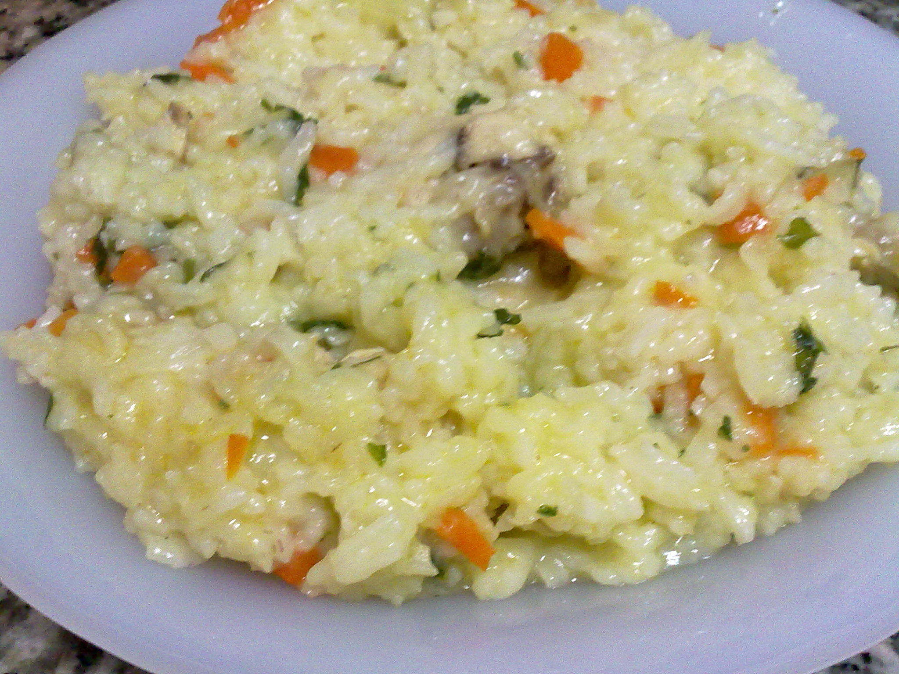

Pilaful este un preparat pe bază de orez, gătit împreună cu diverse legume, carne (de obicei pui, vită sau miel), condimente și uneori fructe uscate. Orezul este fiert într-un lichid aromat (supă sau apă cu condimente), iar ingredientele sunt amestecate pentru a da un gust bogat și savuros. Este un fel de mâncare versatil, popular în multe culturi, fiind servit ca fel principal sau garnitură.